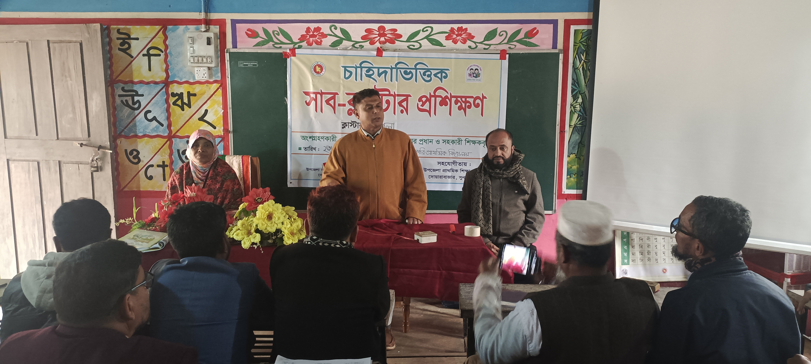
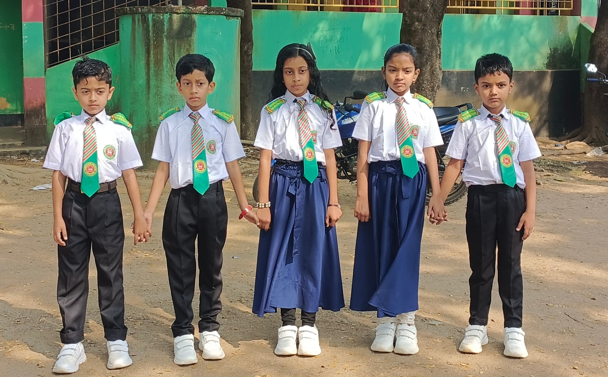
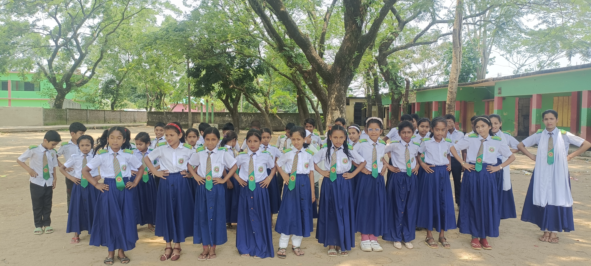
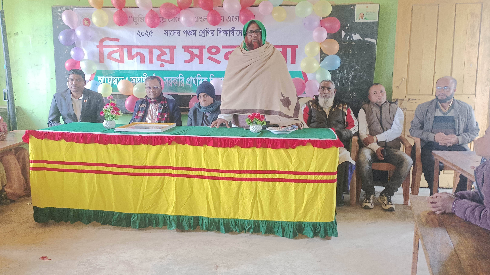
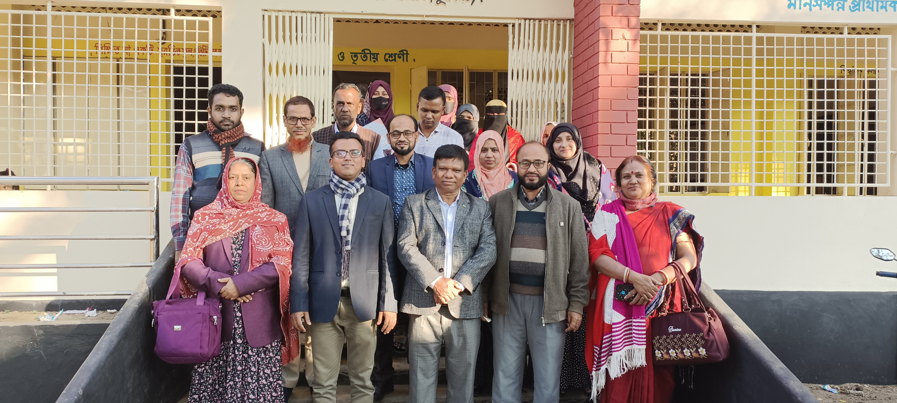
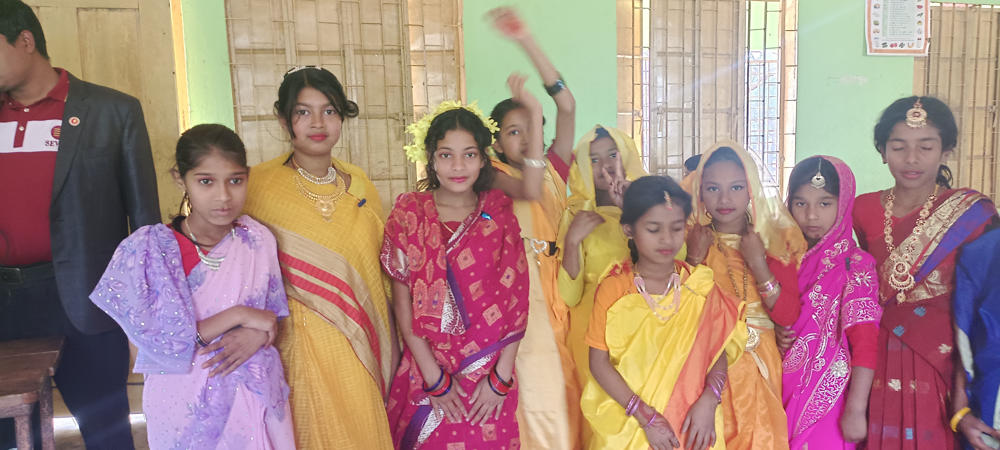

একজন নিবেদিতপ্রাণ শিক্ষক
শিক্ষার্থীদের জীবন গড়ার কাজে নিয়োজিত একজন শিক্ষক। সহজ ও আনন্দময় পদ্ধতিতে পাঠদানে বিশ্বাসী।
আমি মোহাম্মদ ইমাম হুসেন, একজন স্কুল শিক্ষক হিসেবে শিক্ষার্থীদের জীবন গড়ার কাজে নিজেকে নিয়োজিত রেখেছি। আমার বিশ্বাস, প্রতিটি শিক্ষার্থীর মধ্যে অসীম সম্ভাবনা লুকিয়ে থাকে, যা সঠিক পরিচর্যা ও সহজ পদ্ধতিতে পাঠদানের মাধ্যমে বিকশিত করা সম্ভব।
আমার শিক্ষকতার পদ্ধতিতে আমি সবসময় চেষ্টা করি শিক্ষার্থীদের জন্য পাঠকে আনন্দময় ও সহজবোধ্য করে তুলতে, যাতে তারা ভয় না পেয়ে আগ্রহ নিয়ে শিখতে পারে।
কটিয়াদী ডিগ্রী কলেজ
১৯৯৬ সাল, দ্বিতীয় বিভাগ
খিদিরপুর কলেজ
১৯৯৪ সাল, প্রথম বিভাগ
বরইউড়ি দারুসুন্নাত বহুমুখী আলিম মাদরাসা
১৯৯১ সাল, দ্বিতীয় বিভাগ
সহকারী শিক্ষক
২০২৪ - বর্তমান
বর্তমানে এই বিদ্যালয়ে শিক্ষার্থীদের পাঠদান ও শ্রেণি কার্যক্রম পরিচালনা করছি।
সহকারী শিক্ষক
২০১৮ - ২০২৪
এই বিদ্যালয়ে দীর্ঘ ৬ বছর শিক্ষার্থীদের পাঠদানের দায়িত্ব পালন করেছি।
সহকারী শিক্ষক
১৯৯৯ - ২০১৮
শিক্ষকতা জীবনের সূচনা এই বিদ্যালয় থেকে, দীর্ঘ ১৯ বছর নিষ্ঠার সাথে পাঠদান করেছি।
আমি নিম্নলিখিত বিষয়ে পাঠদান করে থাকি এবং শিক্ষার্থীদের জন্য সহজ ও কার্যকর পদ্ধতি প্রয়োগ করি।
ব্যাকরণ ও সাহিত্য উভয় বিষয়ে সহজবোধ্য পাঠদান
ধাপে ধাপে সমস্যা সমাধানের মাধ্যমে শেখানো
বাস্তব উদাহরণের মাধ্যমে আকর্ষণীয় পাঠদান
পরীক্ষা-নিরীক্ষা ও কৌতূহল উদ্দীপক পদ্ধতি
আমার শিক্ষার্থীদের অর্জন আমার জন্য গর্বের বিষয়।
শিক্ষকতার পাশাপাশি লেখালেখির মাধ্যমেও জ্ঞান ছড়িয়ে দেওয়ার চেষ্টা করি।
প্রবন্ধ
প্রাথমিক শিক্ষার মান উন্নয়নে করণীয় বিষয়ে একটি বিশ্লেষণধর্মী লেখা।
উপন্যাস
দারিদ্র্য থেকে সংগ্রাম করে জীবন প্রতিষ্ঠার এক হৃদয়স্পর্শী রোমান্টিক উপন্যাস।
স্কুলের বিভিন্ন অনুষ্ঠান ও ক্লাসের কিছু মুহূর্ত।

শিক্ষার্থীদের দলীয় ছবি

ক্লাসরুম পাঠদান

শিক্ষার্থীদের দলীয় ছবি

স্কুল অনুষ্ঠান

পুরস্কার বিতরণী

শিক্ষার্থীদের দলীয় ছবি
কোনো প্রশ্ন বা মতামত থাকলে নিচের তথ্যের মাধ্যমে যোগাযোগ করতে পারেন।
sadimam99@gmail.com
০১৭১২৩৭৬১০৫
জাহাঙ্গীরগাঁও সরকারি প্রাথমিক বিদ্যালয়, বাংলাবাজার, দোয়ারাবাজার, সুনামগঞ্জ